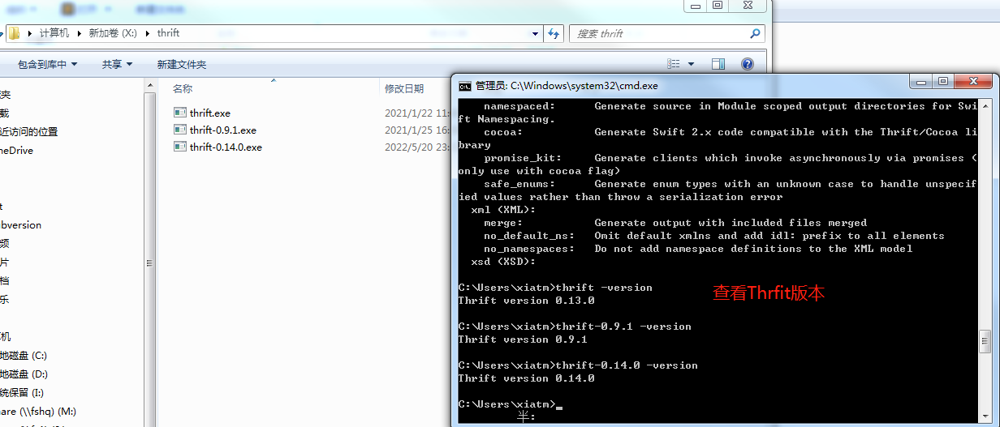
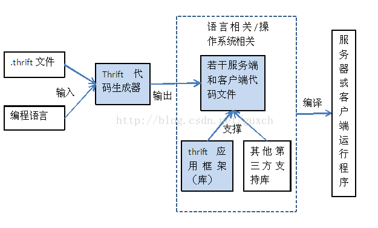
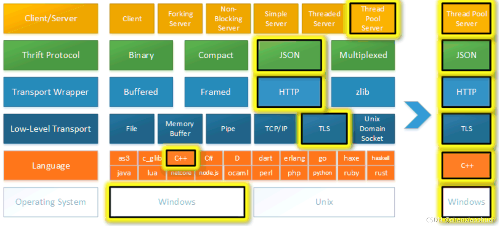

Thrift简介¶
- 远程过程调用框架（RPC）
- Facebook为了实现“大规模跨语言服务开发”而开发
- 接口描述语言和二进制通讯协议 *.thrift
- 包含一套完整的栈来创建客户端和服务端程序
- Thrift支持众多通讯协议：如 TBinaryProtocol 一种简单的二进制格式，简单，但没有为空间效率而优化。比文本协议处理起来更快，但更难于调试 TCompactProtocol 更紧凑的二进制格式，处理起来通常同样高效 TDebugProtocol 一种人类可读的文本格式，用来协助调试 TDenseProtocol 与TCompactProtocol类似，将传输数据的元信息剥离 TJSONProtocol 使用JSON对数据编码 TSimple.JSONProtocol 一种只写协议，它不能被Thrift解析，因为它使用JSON时丢弃了元数据。适合用脚本语言来解析
- Thrift支持的传输协议： TFileTransport 该传输协议会写文件 TFramedTransport 当使用一个非阻塞服务器时，要求使用这个传输协议。它按帧来发送数据，其中每一帧的开头是长度信息 TMemoryTransport 使用存储器映射输入输出。（Java的实现使用了一个简单的ByteArrayOutputStream。） TSocket 使用阻塞的套接字I/O来传输 TZlibTransport 用zlib执行压缩。用于连接另一个传输协议
- Thrift支持的服务器 TNonblockingServer 一个多线程服务器，它使用非阻塞I/O（Java的实现使用了NIO通道）。TFramedTransport必须跟这个服务器配套使用。 TSimpleServer 一个单线程服务器，它使用标准的阻塞I/O。测试时很有用。 TThreadPoolServer 一个多线程服务器，它使用标准的阻塞I/O
- 优点
- 跨语言序列化的代价更低，因为它使用二进制格式
- 预定义的序列化格式包括：二进制格式、对http有好的格式，以及紧凑的二进制格式
- 应用层通讯格式与序列化层通讯格式是完全分离的。它们都可以独立修改
- 缺点
- 没有官方文档
- Thrift 序列化二进制不可读，调试相对困难
- Thrift 的序列化和框架紧耦合，无法支持向持久层直接读写数据，所以不适合做数据持久化协议
- RPC 在 0.6.1 升级到 0.7.0 是不兼容的
- buf fix 和更新不积极，维护成本过高
- 对比：Protobuf（Google）
- protobuf只提供序列化，protobuf序列化后数据量相对少，非常适合应用层对象的持久化场景
- Thrift提供一站式解决：提供序列化+RPC
Thrift安装¶
- Thrift下载地址 版本库
- 配置环境变量 
-
Thrift的架构实现 
- thrift文件定义数据结构和服务接口
- 代码生成器生成若干符合约定通信格式的代码
- thrift应用框架：包括thrift自身提供的库函数
- 第三方库：按照运行的模式，生成的代码中可能需要调用第三方库
- Thrift实际上是实现了C/S模式，代码生成工具通过接口定义文件，生成服务器端和客户端代码（可以为不同语言），从而实现服务端和客户端跨语言的支持
-
Thrift Types
-
Base Types
- bool: A boolean value (true or false)
- byte: An 8-bit signed integer
- i16: A 16-bit signed integer
- i32: A 32-bit signed integer
- i64: A 64-bit signed integer
- double: A 64-bit floating point number
- string: A text string encoded using UTF-8 encoding
-
Special Types
-
binary: a sequence of unencoded bytes
-
N.B.: This is currently a specialized form of the string type above, added to provide better interoperability with Java. The current plan-of-record is to elevate this to a base type at some point.
- Structs Thrift structs define a common object – they are essentially equivalent to classes in OOP languages, but without inheritance. A struct has a set of strongly typed fields, each with a unique name identifier. Fields may have various annotations (numeric field IDs, optional default values, etc.) that are described in the Thrift IDL.
-
-
Containers
- list: An ordered list of elements. Translates to an STL vector, Java ArrayList, native arrays in scripting languages, etc.
- set: An unordered set of unique elements. Translates to an STL set, Java HashSet, set in Python, etc. Note: PHP does not support sets, so it is treated similar to a List
- map
Thrift的HelloWorld¶

* 编写 hello.thrift
* 生成 thrift --gen netstd hello.thrift
实现HelloWorld，进行通信。
Thrift的应用场景¶
- 当我想开发一个快速计算的RPC服务，它主要通过接口函数getInt对外提供服务;
- 这个RPC服务的getInt函数使用用户传入的参数，经过复杂的计算，计算出一个整形值返回给用户；
- 服务器端使用java语言开发，而调用客户端可以是java、c、python等语言开发的程序，在这种应用场景下，我们只需要使用Thrift的IDL描述一下getInt函数（以.thrift为 后缀的文件），然后使用Thrift的多语言编译功能，将这个IDL文件编译成C、java、python几种语言对应的“特定语言接口文件”（每种语言只需要一条简单的命令即可编译完成）
- 这样拿到对应语言的“特定语言接口文件”之后，就可以开发客户端和服务器端的代码了，开发过程中只要接口不变，客户端和服务器端的开发可以独立的进行